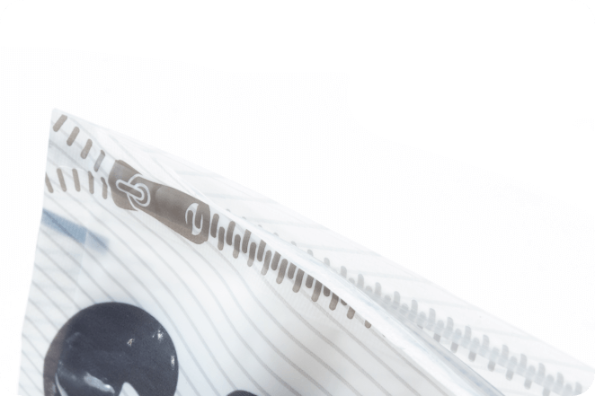

Благодаря удобной застёжке ZIP-Lock использование
комкующегося наполнителя CAT STEP Compact White стало
еще удобней. Теперь можно многократно открывать
и закрывать упаковку, при этом условия хранения продукта
не нарушатся, а значит, он не отсыреет и не рассыплется.